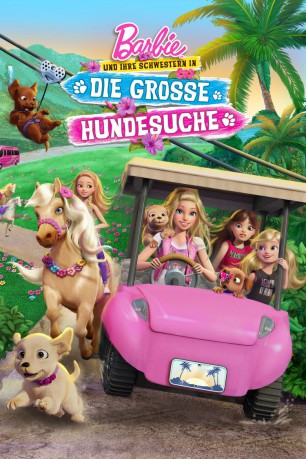

#4651 Barbie 33 und ihre Schwestern in Die große Hundesuche
Alternativ: Barbie & Her Sisters in a Puppy Chase
 
 IMDB-Wertung: 4.9 / 10
IMDB-Wertung: 4.9 / 10  Metascore: 0
Metascore: 0 
In diesem fröhlichen und sonnigen Abenteuer finden Barbie und ihre Schwestern heraus, dass alles spannender und schöner ist, wenn man es gemeinsam macht! Zusammen mit ihren Hundebabys reisen die Mädchen in eine tropische Insel Paradies für Chelseas großen Tanz-Wettbewerb. Da ganz in der Nähe ein Pferde-Tanz-Festival stattfindet, beschließen sie, einen kurzen Ausflug dorthin zu machen. Doch dann kommen ausgerechnet dort ihre niedlichen Hundewelpen abhanden. Während die Schwestern sich gemeinsam auf die Suche machen, haben die kleinen Hunde ihr ganz eigenes Abenteuer zu bestehen. Werden Barbie und ihre Schwestern die kleinen Welpen noch vor Chelseas großer Show wiederfinden?
Jahr: 2016
Dauer: 75 Minuten
FSK:
Land: USA Studio: Universal PicturesTonspuren: DTS - ,
Untertitel:
Auflösung: 1080p (1920x1080) Größe: 3256 MB
Genre: Animation/Trick
Regisseur: Conrad Helten, Michael Goguen, Terry Klassen, Maria Collette Sundeen
Drehbuch: Anaïs Nin
Soundtrack:
Darsteller:
- Alex Barima als Marco
- Natasha Calis als Lindsay
- Claire Corlett als Stacie
 Brenda Crichlow als Auntie Hannah
Brenda Crichlow als Auntie Hannah Maryke Hendrikse als Spirit
Maryke Hendrikse als Spirit- Evans Johnson als Vivian
 Erica Lindbeck als Barbie
Erica Lindbeck als Barbie- Chelsea Miller als Taffy
 Mark Oliver als Archibald
Mark Oliver als Archibald- Taylor Dianne Robinson als DJ
 Kathleen Barr als Silver
Kathleen Barr als Silver- Allie Campbell als Beauty
 Kazumi Evans als Skipper
Kazumi Evans als Skipper- Bronwen Holmes als Rookie
- Elizabeth Irving als Little Girl
- Amelia Shoichet-Stoll als Honey
- Alyssya Swales als Chelsea Roberts
- John Taylor als Little Boy
Datei: X:\Kinder Collections\Barbie\Barbie 33 und ihre Schwestern in Die große Hundesuche (2016, FSK, 1920x1080).mkv seit 31.10.2016
Festplatte: Kinder-Filme+Trick
 Es gibt insgesamt 40 Filme in der Gruppe 'Kinder Collections\Barbie'
Es gibt insgesamt 40 Filme in der Gruppe 'Kinder Collections\Barbie'